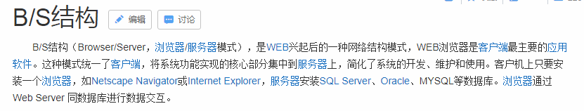
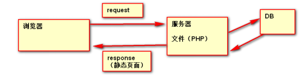
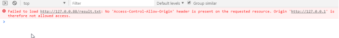
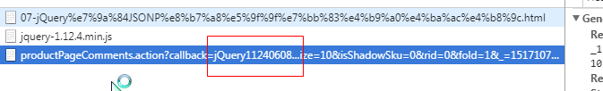
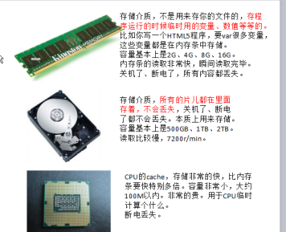
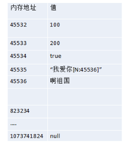
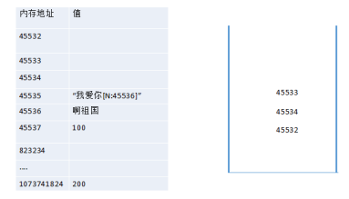
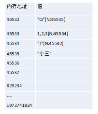
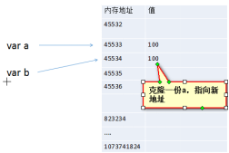
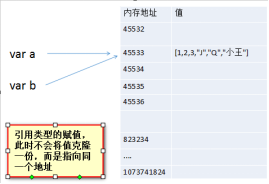

JSON是前后端通信的交互格式，JSON(JavaScript Object Notation, JS 对象标记) 是一种轻量级的数据交换格式。
JSON是互联网各个后台与前代沟通必备格式，取代了原来的XML。
XML数据格式特别“恶心”，现在市场上99%以上的数据格式都是JSON。
工作中都是后端（Java、PHP、Node）给我们提供JSON格式的数据，然后我们前端用Ajax去请求得到JSON数据，将JSON数据渲染在前端页面中。但是服务器给我们返回的数据是字符串JSON，因此没办法打点调用属性，下面我们要学习如何解析后端给我们返回的JSON。
获取PHP中的JSON接口数据：
l 会发现服务器给我们返回的数据是字符串JSON，因此没办法打点调用属性
l PHP中可以将数组变为JSON，使用方法json_encode(数组)
json_db.php后端提供JSON数据：
<?php
header("Content-type","application/json");
//用数组模拟，然后给客戶端返回JSON格式的数据
$arr = array("result"=> array(
array("name" => "李白", "age" => 31, "sex"=>"男"),
array("name" => "苏轼", "age" => 32, "sex"=>"男"),
array("name" => "王安石", "age" => 33, "sex"=>"男"),
array("name" => "杜甫", "age" => 34, "sex"=>"男"),
array("name" => "李清照", "age" => 35, "sex"=>"女")
)
);
echo json_encode($arr); //将数组变为JSON
?>
前端请求php提供的接口，得到数据渲染在页面
$.get("php/json_db.php", function(data){
var dataObj = JSON.parse(data); //将后端返回的字符串转为JSON对象
//循环遍历输出
for(var i = 0; i < dataObj.result.length;i++){
var arr = dataObj.result[i];
//上树
$("ul").append("<li>"+ arr.name + arr.age + arr.sex +"</li>")
console.log(dataObj.result[i].age)
console.log(dataObj.result[i].sex)
}
})
JSON.parse() 将JSON形式的字符串转换为JSON对象
JSON.stringify() 将JSON对象转换为字符串
获取数据库中的数据，以JSON的格式返回给前端：
data_db.php后端提供JSON数据：
<?php
//连接数据库，参数：数据库地址、用户名、密码
mysql_connect('localhost', 'root', '123456');
//选择要操作的数据库
mysql_select_db("student");
//设置编码
mysql_query("SET NAMES utf8");
//写执行插入的SQL语句，保存到数据库的表中
$sql = "SELECT * FROM gz0902";
//执行SQL语句，会返回成功插入的结果（条数）
$result = mysql_query($sql);
$arr = array(); //空数组，循环遍历添加进来的
//循环遍历赋值，添加到数组
while($row = mysql_fetch_array($result)){
array_push($arr, $row);
}
//输出JSON
$resultJSON = array("result" => $arr);
echo json_encode($resultJSON);
?>
前端解析JSON
$.get("php/data_db.php", function(data){
//将JSON形式的字符串转为真的JSON对象
var dataObj = typeof data == "object" ? data : JSON.parse(data);
for(var i = 0; i < dataObj.result.length;i++){
var arr = dataObj.result[i];
$("ul").append("<li>"+ arr.name + arr.age + arr.sex +"</li>")
console.log(dataObj.result[i].age)
console.log(dataObj.result[i].sex)
}
})
概述：eval()是系统默认的函数，是window对象方法，因此可以省略window直接使用。
eval()函数可以将字符串变为语句，把它作为JavaScript代码执行。
eval()尽量少用，但是由于兼容性好，所以该用的时候也要用
JavaScript为什么不推荐使用eval？
https://www.zhihu.com/question/20591877
var str = "alert(1+2+3)";
console.log(eval(str));
var data = "({a:100,b:200})";
var data = "{a:100,b:200}";
console.log(eval("("+ data +")"))
var fun = "function fun(){alert(1)};fun()";
console.log(eval(fun))
$.get("php/json_db.php", function(data){
//将JSON形式的字符串转为真的JSON对象
var dataObj = eval("(" + data + ")");
})第三种方法：使用JS的内置构造函数new Function()。
参数：从第一个开始到倒数第二个都是形参，最后一个参数是执行的程序。
Function()函数能把字符串变为语句：
var sum = new Function("a","b","c","return a+b+c");
console.log(sum(3,4,5));
// 等价于
function sum(a,b,c){
return a+b+c;
}
$.get("php/json_db.php", function(data){
//将JSON形式的字符串转为真的JSON对象
var dataObj = (new Function("return" + data)());
console.log(dataObj)
})


概述：Ajax这门技术它遵循“同源策略”，也就说Ajax不能跨域。
同源策略：它是由Netscape提出的一个著名的安全策略，现在所有支持JavaScript的浏览器都会使用这个策略。
所谓的同源策略：域名、协议、端口相同。
当一个浏览器的两个tab页分别打开：百度和谷歌的页面
当浏览器的百度tab页执行一个脚本的时候会检查这个脚本是属于哪个页面的，
即检查是否同源，只有和百度同源的脚本才会被执行。
如果非同源，那么在请求数据时，浏览器会在控制台中报一个异常，提示拒绝访问。
跨域：其实就是访问不在同一个服务器上的数据，就形成了跨域。
比如：老师的服务器IP是192.168.1.100，但是访问某同学的服务器中的文件，造成了跨域，会报错。
概述：Ajax不能跨域，就比如我们的程序，不能获取百度、淘宝、京东服务器的数据。
<script type="text/javascript">
$.get("http://127.0.0.88/result.txt", function(data){
console.log(data)
})
</script>
提示：刚才模拟两个服务器之间请求数据，会发现Ajax不能跨域。
跨域请求数据也是可以的，只不过Ajax这技术不行，而JSONP这种数据格式可以进行跨域。很多年前，浏览器是没有跨域限制的，可以正常跨域，浏览器为了安全和隐私限制了Ajax跨域。
我们可以通过一些数据手段解决：
为什么使用跨域？当请求不在同一个服务器数据的时候就用跨域，或者偷数据的时候。
实现方式：HTML中用script标签引用这个js文件，其实就是对引用文件的函数执行，此时函数定义在HTML中。
JSONP原理就是：将函数执行的部分，放到了服务器上面。
<script type="text/javascript">
function fun(data){
console.log(data)
}
</script>
<script src="http://127.0.0.88/fun_info.txt"></script>提示：这是老师的本地静态页面，当访问某个同学服务器的时候，返回的数据来源于某同学服务器。
将函数执行的部分放在服务器上。当自己服务器想获取其他服务器上面的数据，你必须声明一个和其他服务器上同名的函数。
这是http://127.0.0.88/fun_info.txt的数据：
fun({"name":"陈雪凝","age":16, "sex":"女"});提示：怎么实现的？
答：script标签当中的src属性指向一个地址，发起了一次请求。
JSONP的优缺点：
优点：
l 与利用XHR对象发送Ajax请求不同，JSONP可以跨越同源策略；
l JSONP的兼容性好，可以在众多浏览器中运行。
缺点：
l 只支持GET一种类型的HTTP请求，应用场景有限；
l 调用失败时缺少必要的提示信息，不方便排查问题；
l 存在一定的安全风险，但可以使用Referer和Token校验进行规避；
l 不便于控制；
l 没有回调函数的功能。
<body>
<button id="btn">发起请求（JSONP）</button>
</body>
<script type="text/javascript">
var btn = document.getElementById("btn");
//函数的定义的
function fun(data){
console.log(data)
}
//发起请求，获取到函数执行部分
btn.onclick = function(){
//创建script标签，并指定请求数据地址
var oscript = document.createElement('script');
oscript.src = "http://127.0.0.88/fun_info.txt";
//上树
document.body.appendChild(oscript);
//过河拆桥，拿完下树
document.body.removeChild(oscript);
}
</script>提示：script标签发起一次请求后，就可以获取到数据，然后让元素下树，不影响返回的数据。
Url中的callback对应的是函数的名。
提示：如果想获取别人服务器上的JSONP数据，你必须声明一个和别人服务器上的同名函数（也可以改名）
<script type="text/javascript">
function fetchJSON_comment98(data){
console.log(data)
}
</script>
<!-- <script type="text/javascript" src="http://127.0.0.88/result.txt"></script> -->
<script src="http://127.0.0.88/fun_info.txt"></script>
<script src="https://sclub.jd.com/comment/productPageComments.action?callback=fetchJSON_comment98&productId=598283&score=1&sortType=5&page=0&pageSize=10&isShadowSku=0&fold=1"></script>概述：封装一个函数，这个函数的作用就是跨域请求别人服务器的数据，用户只需要传进来，url和函数名。
<script type="text/javascript">
var btn = document.getElementById("btn");
function JSONP(url, callback){
//给传进来的匿名函数起名，并定义在全局
window.fun = callback;
//创建DOM
var oscript = document.createElement('script');
oscript.src = url;
//上树
document.body.appendChild(oscript);
//过河拆桥，拿完下树
document.body.removeChild(oscript);
}
//发起请求
btn.onclick = function(){
JSONP("http://127.0.0.88/fun_info.txt", function(data){
console.log(data); //data数据是从函数执行部分传过来的
})
}
</script>概述：jQuery对JSONP进行了封装，jsonCallback就是传进去的函数名字
获取某个服务器的JSON数据：
$.ajax({
url:"http://127.0.0.88/fun_info.txt",
dataType:"jsonp",
jsonpCallback:"fun", //函数名
success:function(data){
console.log(data)
}
})
获取京东评论的数据：
$.ajax({
url:"https://sclub.jd.com/comment/productPageComments.action?callback=fetchJSON_comment98&productId=598283&scor
e=1&sortType=5&page=0&pageSize=10",
dataType:"jsonp",
jsonpCallback:"fetchJSON_comment98",
success:function(data){
console.log(data)
}
})用jQuery跨域的时候，url中的callback后面是函数的名称，也可以自己修改函数名。
如果url的callback后面是?号，不用写jsonpCallback回调函数，jQuery会随机的命名函数。
$.ajax({
url:"https://sclub.jd.com/comment/
productPageComments.action?callback=?&productId=598283&score=1&sortType=5&page=0&pageSize=10",
dataType:"jsonp",
success:function(data){
console.log(data)
}
})下面就是jQuery随机的函数名。

<body>
<select id="province"></select>
<select id="city"></select>
<select id="area"></select>
</body>
<script type="text/javascript" src="js/jquery-2.2.4.min.js"></script>
<script type="text/javascript">
$.get("data/city.txt",function(data){
//转JSON对象
var dataObj = JSON.parse(data);
//循环所有数据，让省份上树
$.each(dataObj.all, function(key,value){
// console.log(key,value);
var $option = $("<option>"+ value.name +"</option>");
$("#province").append($option);
});
//当省的数据发送变化时，执行以下方法
var cityArr = [];
$("#province").on("change", function(){
//拿到当前选择的省的名字
var pro = $("#province option:selected").text();
//遍历省，得到市
$.each(dataObj.all, function(item,val){
if(val.name == pro){
for(var i = 0; i < val.city.length;i++){
$("<option>" + val.city[i].name + "</option>").appendTo('#city');
}
cityArr.push(val.city)
//遍历得到区
$.each(val.city[0].area, function(index,val){
$("<option>" + val + "</option>").appendTo('#area');
})
}
})
})
//当市改变时触发，改变区‘
$("#city").on("change", function(){
$("#area").empty(); //清空内容
//获取当前被选中的城市名字
var city = $("#city option:selected").text();
for(var i = 0; i < cityArr[0].length;i++){
if(cityArr[0][i].name == city){
$.each(cityArr[0][i].area, function(index, val){
$("<option>" + val + "</option>").appendTo('#area');
})
}
}
})
//页面加载初始化城市数据
$("#province").triggerHandler('change');
})
</script><style type="text/css">
div{
width: 300px;
height: 300px;
background: url('./images/loading.gif') no-repeat;
}
img{display: none;}
</style>
<body>
<div>
<img src="./images/19.png" >
</div>
</body>
<script type="text/javascript">
var img = document.getElementsByTagName('img')[0];
//当图片加载完毕后，显示
img.onload = function(){
img.style.display = 'block';
}
</script>Image是系统当中内置的构造函数，因此可以直接使用，返回的是一个img元素对象；
<body>
<div id="box"></div>
</body>
<script type="text/javascript" src="js/jquery-1.12.4.min.js"></script>
<script type="text/javascript">
// var img = document.createElement('img');
var img = new Image();
img.src = "./images/18.png";
//加载完毕上树
$(img).load(function(){
$(this).appendTo($('#box'));
})
</script>聊天室制作思路：
用户点击登录把输入的用户名传给Login.php，Login.php接收后正则验证用户名是否合法，如果不合法给前端返回一个-1,exit返回，
前端接收到返回是-1就提醒用户重新输入，如果合法就开启会话session_start()，并且存储用户名，$_SESSION[name]=$name;且返回一个1给前端，
前端收到是1就登录成功，跳转到聊天页面（有中文记得声明utf-8编码），再开启会话，读取用户名，判断用户按下回车时，将用户名和输入内容写进数据库，
数据库再开会话接受数据，连接数据库，插入数据，执行这条数据$result=mysql_query($sql);如果他是真就返回1，否则返回-1，
聊天页面请求里的函数接受到时1就把输入框清空，起初有滚动条且卷动值是自己的高，开一个定时器，清空聊天框的内容，向数据库get请求JSON数据，数据库连接，
读取数据表且排序（记得声明JSON）执行这个表，声明一个数组，他有一个最大的键，循环拿去数据表中的项，存在一个变量，将这个变量push到我们声明的数据最大的键里，
它的值就是一个数组，在pint_r输出，记得把这个数组转成JSON，聊天页面接收返回值它最大的键再存一个变量，循环这个变量，并且打点取数据上树，定时器间隔请求。
概述：HTTP超文本传输协议，属于短轮询链接，发起一次请求与一次响应之后就断开链接。
PHP session 变量用于存储有关用户会话的信息，或更改用户会话的设置。Session 变量保存的信息是单一用户的，并且可供应用程序中的所有页面使用。
http://www.w3school.com.cn/php/php_sessions.asp
提示：session PHP有，JS也有，它是一个后台给前端用户发的一个‘信物’，可以分辨出谁是谁；
Session 的使用：
Session 不同于cookie，必须先启动Session_start();
当第一次访问网站的时候，Session_start()函数就会创建一个唯一的Session_ID。并自动通过HTTP的响应头，将这个Session_ID保存到客户端的coookie，同时，也在服务器端创建了一个以Session_ID命名的文件，用于保存。
这个用户的会话信息。当同一个用户再次访问这个网站的时候，也会自动的通过HTTP的请求头将cookie中保存的session_ID再次的携带过来，这时，Session_start()函数就不会再次的分配一个新的Session_ID，而是在服务器端的硬盘中去寻找个这个Session_ID同名的Session文件，将这之前的伪这个用户保存的会话信息读出来。在当前的脚本中应用，达到跟踪用户的目的。
提示：PHP中的正则方法preg_match(正则字符串,字符串)返回一个布尔值，exit是PHP中return语句。
免费API接口
https://www.zhihu.com/question/32225726
https://www.showapi.com/apiShow/apiMap
JavaScript语言有：语言核心、DOM、BOM，复习语言核心部分。
JavaScript的数据类型有哪些：
● 基本类型值：number、string、boolean、undefined、null
● 引用类型值：Object、Array、Function、RegExp、Math、Date为什么要区分基本类型和引用类型？有以下两点不一样：
区分的方式是根据内存中存储的位置而区分。
基本类型：在内存中占用的空间是固定大小的，它们的值保存在栈内存，通过值来访问。
引用类型：大小不固定，栈内存中存放它们的地址指向的是堆内存中的对象，是按引用访问。
栈（stack）会自动的分配空间，会自动的释放空间。
堆（heap）会动态的分配内存空间，大小不固定，也不会自动释放空间。
计算机中存储的媒介：
硬盘：文档、音乐、视频、文档等（计算机断电后，数据还保留），存储空间【240G、500G、1T、2T】
内存：存储的介质，读取和写入速度比硬盘快（计算机断电后数据就没了）。存储空间【2G、4G、8G】
CPU缓存（cache）：是位于CPU与内存之间的临时存储器，计算机断电后数据也没了，存储空间【256KB、2M、4M、8M】。
内存有五大空间：堆、栈、自由存储空间、全局、常量
区别1：基本类型在内存中都是“栈内存”存储，引用类型值都是“堆内存”存储。
先说说什么是内存？

计算机的内存能存多少东西？
计算机系统有位数：32位、64位
以64位举例：内存条一条内容有64位的2进制的值，就是8个bytes
内存条4G空间等于 4 * 1024 * 1024 * 1024个bytes，也等于4 * 1024 * 1024 * 1024 ÷ 8个字节。536870912
内存条8G空间等于 8 * 1024 * 1024 * 1024个bytes，也等于8 * 1024 * 1024 * 1024 ÷ 8个字节。1073741824
内存中存储的信息都有对应的地址。

基本类型值，都是内存中的一个小单元格中，字符串如果太长，此时会用“链表”的形式去规划内存，此时就会认为在一个地址中。
什么是“栈”，类似光盘架的结构、或羽毛球筒。先放进去的，一定是最后被取出来的，进出都在一端，属于“first in last out”【FILO】
内存条叫做做“栈内存”，本质原因就是内存会维持一个“空白区域”的清单：

现在根据上图，如果程序员要var a=1;此时这个1被写入到45533地址上，因为目前它是栈顶，45533就“出栈”。
再var b=2;此时b被写入在45534上，因为此时的栈顶是45533，就“出栈”。
此时写var a =“哈哈”,此时a被释放，45533重新回到栈顶，被改写为“哈哈”的时候，此时再次出栈。等于45533的小单元格从1变为“哈哈”。
引用类型值，此时内存处理办法是堆内存：
|
var arr=[1,2,3,"J","Q","小王"]; |

此时称为堆内存。
区别2：基本类型在进行赋值的时候，此时会在内存中克隆一份；引用类型，只传地址。

|
var arr=[1,2,3,"J","Q","小王"]; var b = a; |

对a的更改也会影响b。
注意：基本类型在当执行环境结束时被销毁，而引用类型不会随着执行环境结束而销毁，只有当所有引用它的变量不存在时，这个对象才被垃圾回收机制回收。